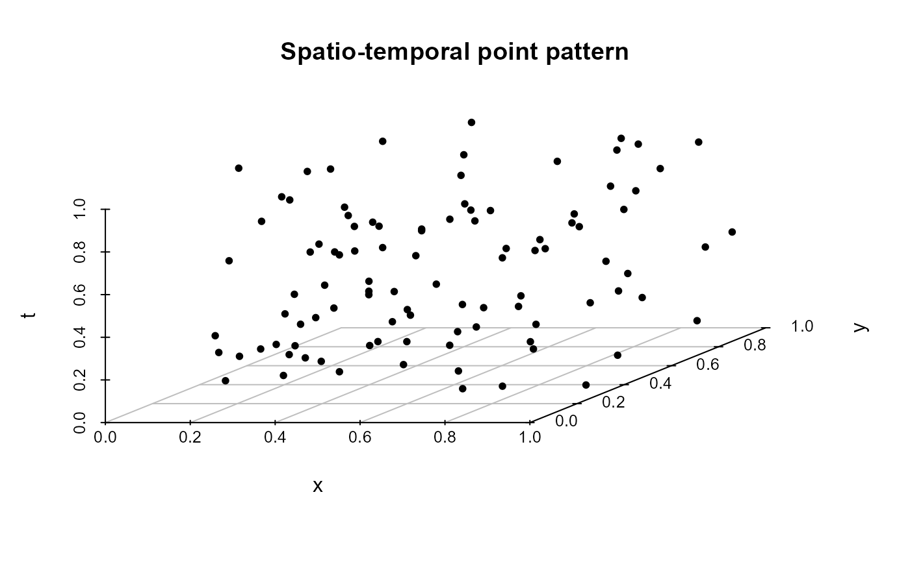

R/Simultion_procedure.R
sim.procedures.RdImplements two types of permutation procedures for resampling the time component of spatio-temporal point process data:
"pure"Pure random permutation of the time coordinates.
"block"Block permutation where the time dimension is divided into consecutive blocks, and permutations are applied at the block level.
These procedures are used for generating surrogate datasets under the null hypothesis of first-order separability.
sim.procedures(X, nperm = 1999, nblocks = 4, method = c("block", "pure"))A numeric matrix or data frame with at least three columns, where the third column represents time.
Integer. The number of permuted datasets to generate.
Integer. The number of temporal blocks to use for block permutation. Must be > 2.
Character. The permutation strategy to use. One of "pure" or "block".
A list of nperm matrices. Each matrix is a permuted version of the original input X, where the third column (time) has been resampled based on the selected method.
# \donttest{
set.seed(123)
X <- cbind(runif(100), runif(100), sort(runif(100)))
# Pure permutation
sims_pure <- sim.procedures(X, nperm = 10, method = "pure")
head(sims_pure[[1]])
#> [,1] [,2] [,3]
#> [1,] 0.2875775 0.5999890 0.8819776
#> [2,] 0.7883051 0.3328235 0.5468262
#> [3,] 0.4089769 0.4886130 0.7988316
#> [4,] 0.8830174 0.9544738 0.2572167
#> [5,] 0.9404673 0.4829024 0.2258864
#> [6,] 0.0455565 0.8903502 0.2387260
# Block permutation
sims_block <- sim.procedures(X, nperm = 10, nblocks = 5, method = "block")
# Visualize the first result from block permutation
plot_stpp(sims_block[[1]], type = "3D")

# }